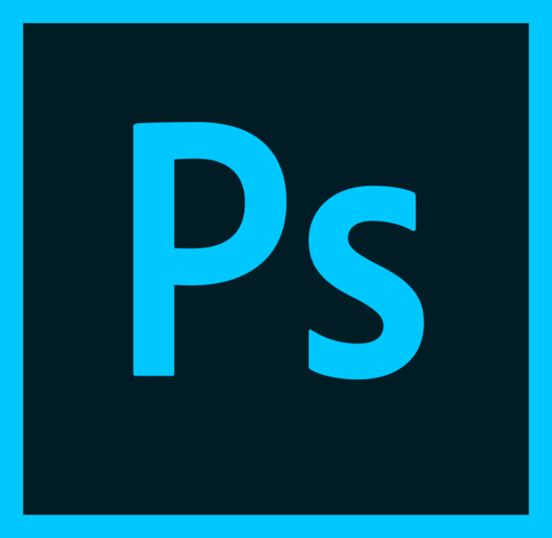
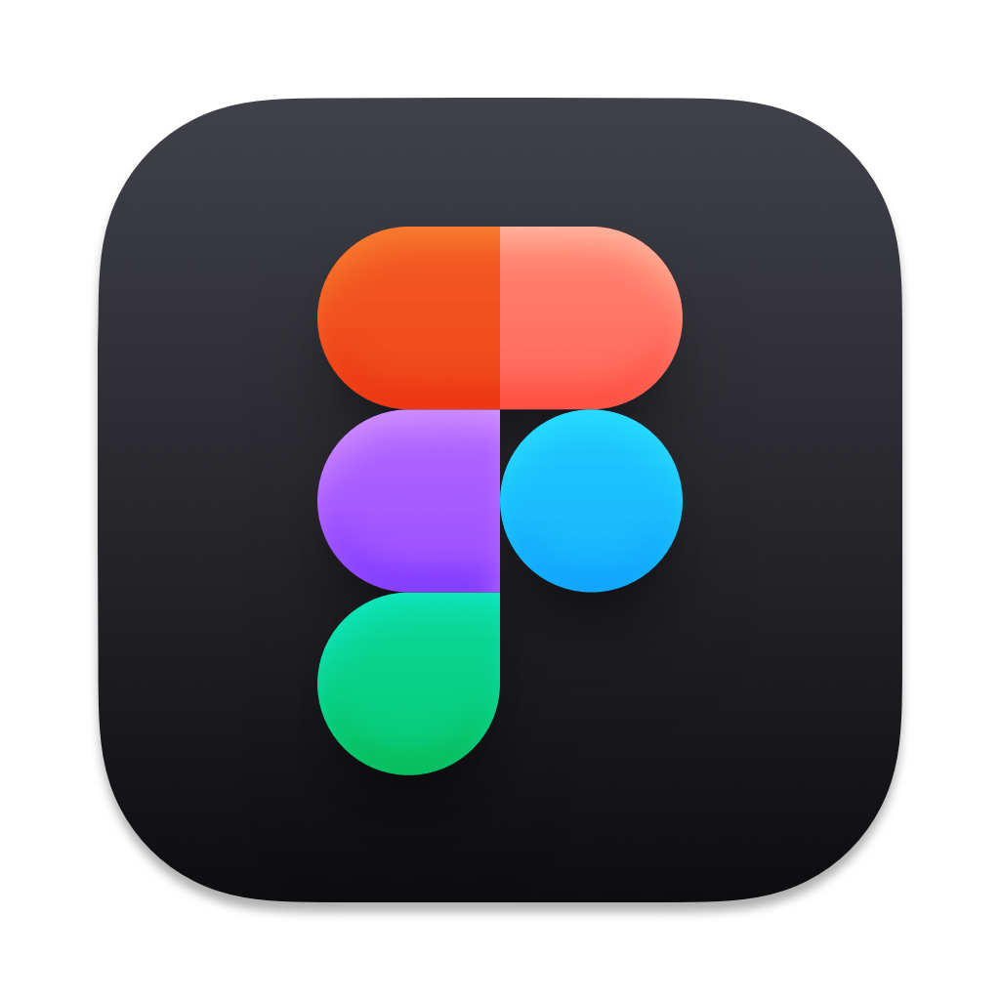

이름 : 유이나 (柳利娜) Yu Ina
생년월일 : 1993.6.21
혈액형 : rh+ A
MBTI : 사랑스런 E N F P
별자리 : 쌍둥이자리 (GEMINI)
탄생석 : 진주 (Pearl)
탄생화 : 달맞이꽃
주소 : 광주광역시 북구 신안동 거주
성격 : 깜찍★♡발랄♪ Too Much Talker
특기 : 멍때리기, 아무말대잔치, 쇼핑하기
취미 : 드라이브, 갑자기 만나서 놀러가기
좌우명 : 빛 속에서 살자
좋아하는 음료 : 버블티, 아샷추
좋아하는 장소 : 도시와 멀리 떨어지지 않은 한적한 곳
좋아하는 계절 : 가을
좋아하는 날씨 : 햇살 좋은 날
좋아하는 영화 : 플립(Flipped)
좋아하는 노래 : 장르 가리지 않고 멜로디가 좋으면 좋아한당
좋아하는 동물 : I❤️고양이
좋아하는 꽃 : 백목련
사랑 or 우정 : 사랑
멜로디 or 가사 : 멜로디
귀신은 있다 or 없다 : 있다ㅠ
명필이다 or 악필이다 : 아무래도 명필이지
나는 예민한 편 or 둔한 편 : 예민보스
새드앤딩 or 해피엔딩 : ♥HAPPY ENDING♥
열린결말 or 닫힌결말 : 열린결말
익숙함 or 새로운 도전 : 도전언
컨닝한 적 있다 or 없다 : 앗 있다ㅎ
사주 믿는다 or 안 믿는다 : 믿는당 재밌음
아는 게 힘 or 모르는 게 약 : 아는 게 힘!!
나는 나와 연애할 수 있다 or 없다 : X
나는 나와 친구할 수 있다 or 없다 : 있다람쥐
나의 소비패턴은 흥청망청 or 절약적 : 흥텨ㅇ망쳥
기념일 챙기는 편 or 챙기지 않는 편 : 같이 챙기는 거 좋아
나를 사랑하는 사람 or 내가 사랑하는 사람 : 내가 사랑하는 사람
10억 받고 5년 전으로 가기 or 30억 받고 5년 후로 가기 : 5년 후~
명품이지만 내 취향이 아닌 것 or 비싸진 않지만 내 취향인 것: 내 취향
현재 하는 일 : 디자인, 퍼블리싱
현재 목표 : 함께하고 싶은 사람이 되자
삶에 대한 만족도 : ■■■■■■■■□□ 80%
최근 관심사 : 퍼스널컬러, 저축
배우고싶은 것 : 다도, 미술, 가야금
죽을때 가져가고싶은 것 : 좋은 기억들과 꽃다발
스트레스 해소법 : 돈을 펑펑 쓴다, 휴식 시간을 가진다
[ 준비중… ]
-
HTML5
■■■■■■■■□□ 80% -
CSS3
■■■■■■■■□□ 80% -
JS/jQuery
■■■■■■■■□□ 80% -
Adobe Photoshop
■■■■■■■■□□ 80% -
Adobe Illustrator
■■■■■■■■□□ 80% -





# Skills
# Tools
멜론 웹사이트 클론 코딩
[참여도] ■■■□□
[제작기간] 2주
[팀프로젝트] 메인페이지 80% 제작
처음으로 진행한 팀 프로젝트로 멜론의 웹사이트를 클론코딩했습니다. 메인페이지를 맡아 제작했습니다.
화장품브랜드 시드물 웹 리뉴얼
[참여도] ■■■□□
[제작기간] 2주
[팀프로젝트] 메인페이지 100% 제작
자연주의 화장품 브랜드 시드물의 웹 사이트를 리뉴얼했습니다. 메인페이지를 맡아 제작했습니다.
p.s.Cake 웹사이트 제작
[참여도] ■■■■■
[제작기간] -
[개인작업] 미완성 / 제작중
p.s.Cake는 빈티지한 감성의 수제 레터링 케이크 전문점이라는 가정 하에 만들어진 가상의 케이크 전문 브랜드입니다.
웹 페이지를 제작 중입니다.
Ve;lunch PC, 모바일 반응형 제작
[참여도] ■■■■□
[제작기간] -
[팀프로젝트] 미완성 / 제작중
Ve;lunch(비런치)는 비건 브런치카페라는 가정 하에 만들어진 가상의 브런치 전문 브랜드입니다. 웹페이지와 모바일 반응형을 제작 중입니다.